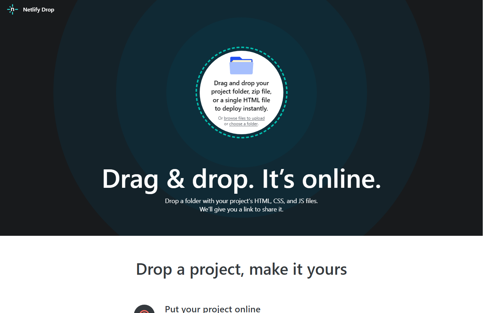

МАСТЕР-ИИ
Урок 4.1 · Практикум
Публикуем сайт
через Netlify
От HTML-файла на компьютере до ссылки в интернете — за 4 шага и 5 минут
МАСТЕР-ИИ
Урок 4.1
В этом уроке
Что вы сделаете
01
Зарегистрируетесь на Netlify — бесплатно, без настройки сервера
02
Загрузите HTML-файл drag & drop и получите публичную ссылку
03
Узнаете про rename index.html и почему это важно
04
Научитесь обновлять сайт — ссылка остаётся той же
МАСТЕР-ИИ
Урок 4.1
01
Что такое Netlify
Хостинг без сервера
Просто перетащите файл — и сайт уже в интернете
МАСТЕР-ИИ
Урок 4.1
Что такое Netlify
- Бесплатный сервис для публикации сайтов
- Работает без настройки сервера и покупки домена
- Вы просто перетаскиваете HTML-файл — и через секунды получаете ссылку
- Ссылка выглядит так: curious-faun-390d44.netlify.app
- Сайт доступен из любой точки мира сразу после загрузки
МАСТЕР-ИИ
Урок 4.1
02
4 шага
Пошаговый практикум
Регистрация, загрузка, ссылка — всё за 5 минут
МАСТЕР-ИИ
Урок 4.1
4 шага до публикации
01
Перейдите на netlify.com → Sign upПравый верхний угол — кнопка Sign up
02
Выберите способ входаGoogle — самый быстрый вариант, не нужен новый пароль
03
Перетащите HTML-файл в поле UploadDrag & drop или кнопка «browse files» — оба способа работают
04
Скопируйте ссылку из раздела ProjectsАдрес выделен зелёным — отправьте его кому угодно
МАСТЕР-ИИ
Урок 4.1
Зона загрузки Netlify

Та самая зона перетаскивания — «Drag & drop. It's online.»
МАСТЕР-ИИ
Урок 4.1
Важный момент:
Rename to index.html?
- Netlify может предложить переименовать файл
- Без файла index.html сайт показывает «Page Not Found»
- Нажмите «Rename and deploy» — Netlify сам переименует и опубликует
- Это нормальное поведение — не пугайтесь диалогового окна
МАСТЕР-ИИ
Урок 4.1
Как обновить сайт
после правок
10 сек
Время обновления
Открываете проект → перетаскиваете новый файл → готово
=
Ссылка не меняется
Клиенты видят актуальную версию по той же ссылке
Раздел «Production deploys» → перетащить обновлённый файл
МАСТЕР-ИИ
Урок 4.1
Запомните главное
Ключевые выводы
- Netlify — бесплатный хостинг, не нужен сервер и домен
- 4 шага: Sign up → Google → Upload файл → скопировать ссылку
- Если спросят про index.html — нажмите «Rename and deploy»
МАСТЕР-ИИ
Следующий урок
Урок 5:
Многостраничный сайт
Профессиональный цикл: ТЗ, reverse-инжиниринг, скиллы и публикация реального бизнес-сайта
Следующий урок →